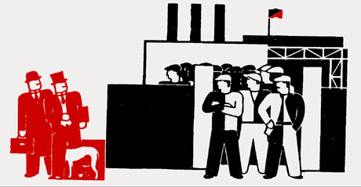

First Latin American Gathering Of Worker-Recovered Factories
Submitted on Sun, 11/06/2005 - 9:38pm
Disclaimer - The following article is reposted here because it is an issue with some relevance to the IWW. The views of the author do not necessarily agree with those of the IWW and vice versa.
By Jorge Martin - November 3, 2005 (original article from www.znet.org).
Caracas. "This is an historical gathering. For the first time workers from occupied factories from across the continent are meeting together" (Serge Goulart, United Workers' Council of Brazilian group of occupied factories)
"We have shown how the workers can run the companies, and this means we can run society as well" (Ricardo Moreira, PIT-CNT, Uruguay)
More than 400 people from 235 worker occupied factories and 20 different national trade union centres participated in the "First Latin American Gathering of Worker Recovered Factories" in Caracas on October 27-29.
This was truly a historical meeting, the first time that workers involved in factory occupations in different countries met to discuss their problems, share their experiences and draw political conclusions from their struggle. And such a meeting could only take place in revolutionary Venezuela where it had the support of Chavez's Bolivarian government.
In the opening rally, which took place at the Teresa Carreño Theatre, with 3,000 worker activists present, president Chávez explained how it is capitalism that closes down factories and that these "must be recovered by the workers". He compared the struggle of the occupied factories movement to the struggle for independence from Spanish rule in the 19th century and underlined the "potential of the workers in our continent to break their chains and leave capitalism behind". The platform of the rally included a number of Venezuelan ministers, trade union leaders from across the continent and workers from occupied factories (including Edgar Peña, leader of the Invepal workers).
The factory take-overs that are taking place across the continent are part of the struggle for true sovereignty and liberation from the domination of the US, Chávez stressed. But at the same time he made clear that "the people and the workers of the US also have their part to play in this battle".
Chávez also explained his views regarding the trade union movement and its relationship with the Bolivarian government. He started by greeting the formation of the National Workers' Union, UNT, but added that the new trade union confederation "is not and should never be an appendix of the government, it must be autonomous and free" from it. The old bureaucratic trade union model of "unions which ended up negotiating behind the workers' backs, of leaders like those in Venezuela who ended up enriching themselves while negotiating about workers' lives with the bosses" must be rooted out of the trade union movement.
Chávez proposed the creation of a network of worker-recovered companies so that they could collaborate and exchange experiences. Finally, he announced the expropriation of two more companies, Sideroca, and the Cumanacoa Sugar Mill. This was received with an enthusiastic standing ovation by the 3,000 workers present who shouted "asi, asi, asi es que se gobierna" ("this is the way to rule"). The Sideroca factory in Zulia makes metal pipes for the oil industry and had been abandoned by its owners six years ago. On September 6, a group of former workers and people from the local community had taken over the plant to prevent the owners from taking away the machinery, and since then had been demanding expropriation under workers' management. The Cumanacoa Sugar Mill in Cumaná, had been running at half its capacity since its privatisation back in 1992, and more recently this situation had worsened to a point where it was operating at 20% capacity. Workers and the local sugar cane producers had demanded expropriation.
Chavez announced that he would sign the expropriation decrees before going to the Mar de Plata summit in Argentina this week. He said others would follow and mentioned the tomato processing plant Caigua in Guarico. This was taken over by the workers on July 7 after a conflict over non-payment of wages, when the workers realised that the owner wanted to sell the raw materials (tomato paste) stored in the plant. Once again, the workers demanded the plant be expropriated and handed over to the workers.
But the president also added that the idea was not to expropriate the companies so that their workers could "become rich overnight", but rather that production should benefit the community as a whole. Along the same lines, during the "Encuentro", workers from Caigua declared that: "We do not want to create 57 capitalists, we are on the path to socialism".
As Serge Goulart said: "this is a president that sides with the workers, not in words, or with statements, but with the concrete facts of these two expropriations".
Debates on factory occupations
The Encuentro then broke into a number of separate meetings, one for trade union organisations, another for workers from occupied factories and one for members of parliament and government representatives.
There was debate on the forms of property that worker-recovered companies should take. The comrades from the Cipla-Interfibra-Flasko-Flaskepet group of worker-managed companies in Brazil (http://paginas.terra.com.br/noticias/cipla/) insisted on the demand for nationalisation under workers' control.
Serge Goulart, the coordinator of the United Workers' Council, was adamant: "We are against the idea of a "solidarity economy". In fact this would mean turning the workers into capitalists, weakening the working class and, in competing in a capitalist market, they would only succeed by making other factories bankrupt. We are for nationalisation, but nationalisation under workers' control in order to prevent a new bureaucracy from emerging". He added that this struggle could only be seen as part of the general struggle for the "nationalisation of the banks and the multinationals in order to plan the economy in the interests of the people". "There cannot be socialism in one country, even less in a single company!" he said emphatically.
Asked about the debate president Chavez has opened up on "socialism of the 21st century", Serge Goulart replied: "The Venezuelan Revolution is extraordinary in that it confirms what the Marxists had always said. It started as a struggle against imperialism and for national sovereignty. But then we saw the working class entering the scene in the struggle against the sabotage of the oil industry and the revolution went further, as it did with the nationalisation of Venepal on January 19 this year. It started as an anti-imperialist struggle, but it either becomes socialist or it will be crushed. (…) The question will be posed of the nationalisation of the banks and the multinationals and that can only be carried out by the workers".
Orlando Chirino, National Coordinator of the Venezuelan UNT explained the context in which these factory occupations were taking place: "This is a symptom of the degeneration of capitalism which leads to a process of deregulation, flexibilisation and increased exploitation of the workers. Capitalism no longer plays the progressive role it once played." The whole process is not without contradictions or difficulties. In the case of Venezuela particularly, most of the workers involved in these occupations have no previous experience of trade union organisation or struggle and they will face many problems. But to Orlando, in order to save jobs and livelihoods, the task of the trade unions is to give this instinctive movement of factory occupations "a conscious expression, with the final aim of socialising the means of production."
Both Chirino and the trade union representatives of Venezuela's state-owned electricity company CADAFE, stressed that worker-management was enormously progressive and was "the only way of defeating bureaucratism and corruption which are threatening the Bolivarian Revolution".
Cooperation agreements
As part of the meeting, representatives from different worker-managed companies gathered to discuss and reach mutually beneficial agreements. They insisted however, that these were not merely commercial agreements, but rather that they were based on different principles of mutual cooperation, transfer of technology, etc.
Among the agreements signed was that between Venezuela and the Cipla-Interfibra-Flasko-Flaskepet group of worker-managed companies in Brazil. On the one hand, the Venezuelan state-owned petrochemical company Pequiven will sale raw materials to Cipla at preferential prices and on the other hand PDVSA will buy finished pipes from Cipla. But at the same time, the workers at Cipla-Interfibra will provide the technology and the know-how for Venezuela to set up a number of factories making PVC frames for windows, doors, and other construction materials. All this will allow Venezuela to by-pass the domination of the market for these types of plastic products by a handful of US multinationals.
The importance of this is that in reality the Venezuelan government is giving direct assistance to a group of factories in Brazil that have been occupied and managed by the workers and that have been threatened on a number of occasions with eviction and jail by the Brazilian judiciary. This cannot but serve as an encouragement for workers in Venezuela and throughout Latin America to take over their own factories.
Internationalism and anti-imperialism
The Encuentro also had a marked internationalist character. The presence of a delegation from the Bolivian COB brought a breath of the revolutionary traditions of the Bolivian miners and workers. Jaime Solares, secretary of the COB, underlined the "key role of the proletariat internationally" and added that "socialism has not died, it is still relevant". He also warned of the threat of international intervention against the Bolivian revolution, particularly the threat posed by the recently created US military base in the Paraguayan Chaco region, on the border with Bolivia.
The situation in Haiti was also discussed. Julio Turra, from the Brazilian CUT said in no uncertain terms "Brazilian troops in Haiti are at the service of the empire". The final declaration of the trade unions present at the meeting called for the "withdrawal of occupying troops from Haiti, Iraq and Afghanistan".
There was also strong opposition to the Free Trade of the Americas Agreement, promoted by the US administration. As Ricardo Moreira from the Uruguayan PIT-CNT explained, "the only real integration is not trade integration, but the integration based on the working class, which is the most revolutionary class". Argentinean trade union delegates announced a nationwide work stoppage on November 4 against Bush's presence at the Summit of the Americas in Mar del Plata.
Closing meeting and conclusions
Finally, after three days of hard work and discussions, of sharing of experiences by different groups of workers who had been forced to take over their factories in order to save their livelihoods, 500 workers, trade union representatives and Venezuelan government officials (including Minister of Labour María Cristina Iglesias and a number of other Ministers) gathered for the closing meeting.
The mood was one of enthusiasm, and the before the meeting could start, all the workers rose to their feet shouting the slogan popularised by the Argentinean factory occupation movement: "aquí están, estos son, los obreros sin patrón" ("here we are, we are the ones, the workers without a boss"). Nearly 200 workers had travelled from Argentina to participate in this event, and the Argentinean National Movement of Recovered Companies (MNER) had played a key role in its organisation.
The conclusions from the different workshops were read out and approved, and then a joint document, called "The commitment of Caracas" was read by a leader of the workers of the Caigua tomato plant and approved by acclamation. The workers from worker-managed companies had also passed their own political statement which explained the importance of the Encuentro. "We are here to push our movement forward, to defend it, to help each other and to strengthen our struggle against the common enemy of the peoples, capitalism, which brings war and plans misery throughout the planet". It also strongly defended the right to occupy factories: "The capitalists, the financial speculators and the multinationals are to blame for the bankruptcy of the companies. Every factory closed is a graveyard of jobs. (…) Therefore the workers in the countryside and the city have the right to occupy the factories and the land to defend their jobs and the sovereignty of our countries. This is why we occupied the factories and started production."
The statement greeted the announcement of more expropriations by president Chávez: "In Venezuela, which is living through a revolution, the workers have put on the agenda expropriation with workers' control of these companies in different ways. We greet the announcement of comrade president Chavez during the opening of this Encuentro, of two new expropriations of companies and that they should be under workers' control. This is what we all need in our countries."
It also explained the character and final aims of the movement: "We wish to advance to an economy under the total control of the workers so that it can be planned in the interests of the people as a whole. Our movement is anti-imperialist and anti-capitalist. It is a clarion call and an organised movement of the working class against the regime of private property of the large-scale means of production that is only capable of surviving through war and the exploitation and oppression of the peoples".
The statement warned of the dangers facing the movement: "Our resistance has not gone unnoticed by the bosses, by Capital and their international institutions, which attempt to prosecute and crush us. But they are also seeking ways of destroying our resistance by enmeshing the workers in different forms of class collaboration, tempting them with possibilities of individual integration within the capitalist system". To resist these attempts it was agreed to set up an international network of occupied and worker-managed factories. "From now on, we will rise as one if in any country the governments attack us or threaten to close down the companies we control".
Finally the statement concluded with an inspiring call: "They steal the land, we occupy it. They make war and destroy nations; we defend peace and the integration of the peoples' with respect for their sovereignty. They divide; we unite. Because we are the working class. Because we are the present and the future of humankind. We call upon all to continue this struggle, to broaden it and to meet again next year to strengthen the unity and the struggle we are carrying out together with the working class as a whole and the peoples against the common enemy of humanity. Venceremos!"
The Encuentro undoubtedly will encourage the struggle of workers across Latin America and beyond. In the opening meeting Julio Turra from the CUT described how "when the Chavez government declares war on the latifundia, this is a source of encouragement for the comrades of the MST [Landless Peasant's Movement]. When it expropriates the bosses who organised the coup it is a source of encouragement for the comrades from Brazil who have been fighting for three years demanding that the government expropriates their abandoned companies".
In Venezuela the meeting was not closed off within the four walls of the meeting halls, but went beyond. Reports of the meeting and documentaries on the occupied factories in different countries featured prominently on both state TV channels. Workers from the occupied factories were present and spoke on the weekly "Aló Presidente" programme hosted by Chávez. Now it is up to the workers and the trade union movement in Venezuela to take up the call, and get a list of the 700 factories that have been closed by the bosses and start recovering them. Here the workers so far have found a president who is sympathetic to their cause and has even encouraged them.
Without doubt, this was a meeting that will go down in the history of the Latin American trade union movement. In the words of Ricardo Moreira from the PIT-CNT, already quoted above, "we have shown how the workers can run the companies, and this means we can run society as well".